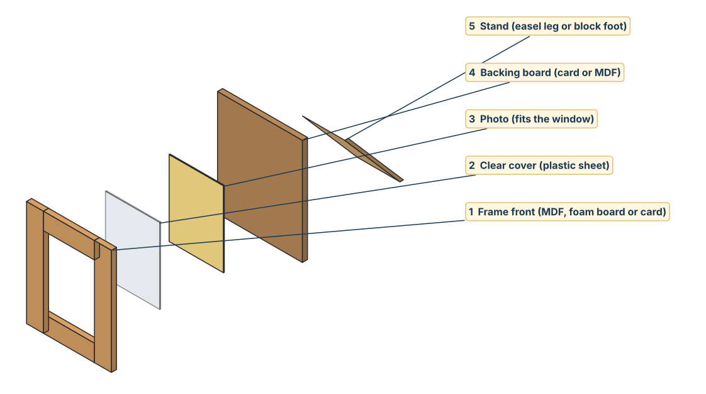

I can…
- I can list success criteria for my frame.
- Each criterion is clear and can be tested.
- I used numbers where possible.
Design brief. Design and make a decorative photo frame that holds a 5 × 7 inch photo (127 × 178 mm) and stands on a desk or shelf. It must be made from MDF, wood or card, with recycled materials in the decoration.
What is a success criterion?
A success criterion is a test. At the end of the project you ask: did my frame pass this test? Good criteria are specific and measurable.
| Weak criterion | Strong criterion | Why it is better |
|---|---|---|
| The frame looks nice. | The frame uses a theme and at most 4 colours. | You can count the colours. |
| It is the right size. | The window is 120 mm × 170 mm. | A measurement you can check. |
| It is safe. | All edges are sanded smooth with no splinters. | You can run a finger along it to test. |
| It is cheap. | The extra materials cost less than 10 AED. | A number to compare. |
| It stands up. | The frame stands for 1 minute without falling. | A test with a time. |
Six categories to think about
🎨 Aesthetics
How it looks: theme, colours, pattern.
How it looks: theme, colours, pattern.
📏 Size
Width, height, window, thickness.
Width, height, window, thickness.
⚙️ Function
Holds the photo, stands up.
Holds the photo, stands up.
🧱 Materials
What it is made from.
What it is made from.
🛡️ Safety
Smooth edges, safe glue and paint.
Smooth edges, safe glue and paint.
♻️ Environment / cost
Recycled items, low price.
Recycled items, low price.

Criteria builder
Write one criterion for each category and say how you will test it. Tap a word in the idea bank to add it to the box you last clicked.
| Category | Success criterion | How I will test it |
|---|---|---|
| Aesthetics (looks) | ||
| Size | ||
| Function (what it does) | ||
| Materials | ||
| Safety | ||
| Environment / cost |
Play as many times as you like. Log in first (box at the top) so your score and answers are saved to the class sheet. Your best score is shown next to each game.